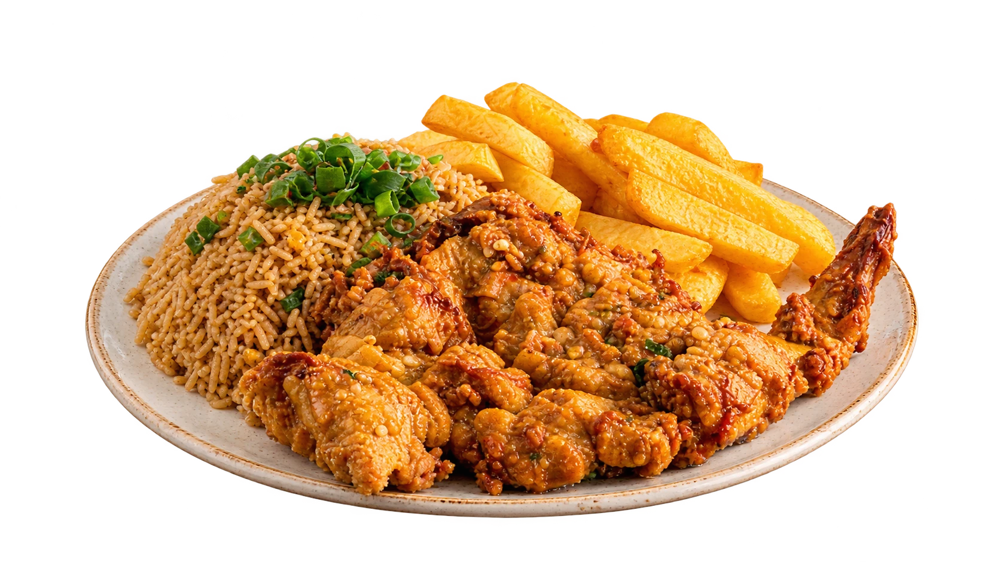
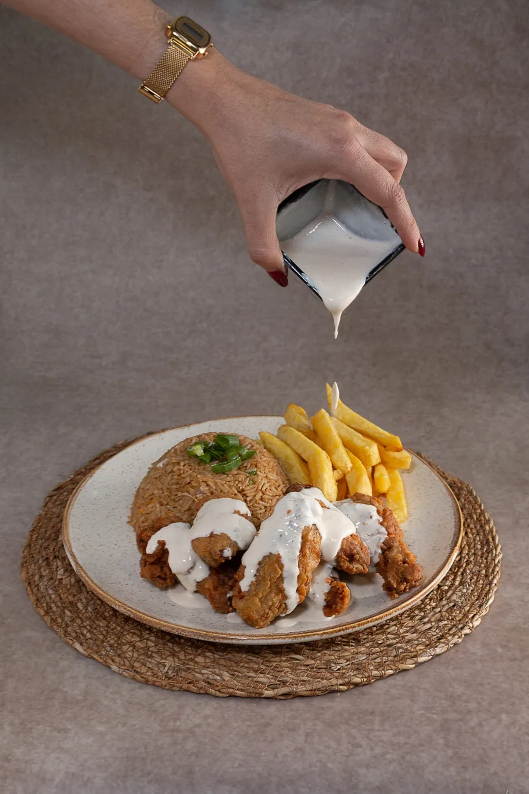
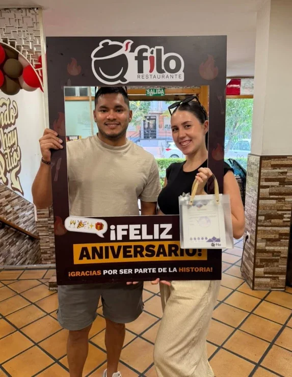

Bienvenido a Q'filo · Chifa & criollo
Sabor que provoca
Restaurante peruano de fusión chifa y criollo en Getafe, Madrid.

¿Por qué Q'filo?
Fuego de wok,
sazón de casa
En Q'filo el chifa y la cocina criolla se cruzan en cada plato: arroz salteado al momento, carnes jugosas y caldos que reconfortan. Cocina peruana hecha con cariño y servida con fuego, aquí en Getafe.
- Producto fresco
- Fuego de wok
- Sazón criolla
- Hecho al momento

Hecho al momento
Nuestra cocina
Un mundo de sabor
en cada bocado
En Q'filo juntamos dos tradiciones que se entienden de memoria: el chifa, con su wok encendido y su salsa de soya, y la cocina criolla peruana, con su sazón de casa. El resultado son platos generosos, hechos al momento y pensados para compartir en Getafe.
- Salteados a fuego vivo
- Ingredientes frescos
- Recetas chifa y criollas
- Raciones para compartir
Los favoritos
de la casa
Chifa
- Wok
Arroz chaufa de pollo
Arroz al wok con pollo, huevo y cebolla china.
- Wok
Chaufa de mariscos
Mariscos salteados con arroz dorado.
- Wok
Aeropuerto
Arroz, tallarín y proteína en un solo plato.
- Wok
Tallarín saltado
Fideos a fuego fuerte con verduras crujientes.
Criollo & postres
- Criollo
Pollo a la brasa
Dorado a la brasa, con papas, ensalada y arroz.
- Criollo
Lomo saltado
Lomo, cebolla, tomate y papas doradas.
- Criollo
Caldo de gallina
Gallina, papa, hierbabuena y huevo.
- Dulce
Tres leches
Bizcocho empapado y crema suave.
- Dulce
Cheesecake
Cremoso, con frutos rojos.


Q'filo por dentro
Vive la
experiencia
El fuego del wok, el vapor del caldo y la mesa llena. Así se vive Q'filo desde dentro.
-

Opiniones
Lo que se cuenta
en la mesa
Aquí irá la opinión de un cliente real. Copia el texto de una reseña de Google y pégalo en este lugar.
Segunda reseña pendiente. Usa solo opiniones reales y con permiso de quien las escribió.
Tercera reseña pendiente. Puedes añadir o quitar bloques <figure data-review> según necesites.
Únete y recibe
ofertas calientes
Escríbenos por WhatsApp o llámanos y te contamos las promos de la semana. ¡Reserva tu mesa o pide para llevar!